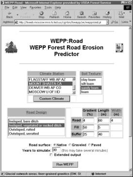

Rocky Mountain Research Station
Moscow Forestry Sciences Laboratory
1221 South Main Street, Moscow, ID 83843
https://forest.moscowfsl.wsu.edu/
| USDA Forest Service | Rocky Mountain Research Station | Moscow FSL | Soil and Water Engineering |
|---|
Abstract
Soil erosion models have been under development since the late 1930s. Technologies for prediction began with simple tables and equations culminating in the 1950s with the Universal Soil Loss Equation. In the 1960s, digital computers allowed scientists to model the processes that cause erosion. These early models required complex databases and a high degree of user skill to operate; therefore they were used primarily by the research community. One such process-based erosion model is the Water Erosion Prediction Project (WEPP) model. The USDA Forest Service wanted to use this model but found, following a number of workshops, that the model was too complex for field specialists to use. To capture the scientific capabilities of WEPP for Forest Service users, specialized interfaces were developed (using HTML, Perl and JavaScript) to allow users to run WEPP remotely over the Internet using a standard browser. Alternatively, with the addition of a small web server application, the same specialized interfaces and erosion and climate models can be installed on personal computers for users without Internet access. The user generates site characterization data and climate data by running the CLIGEN program using several large climate databases. These data are used by the WEPP erosion model to predict runoff, upland erosion, and hillslope sediment delivery. The displays of the results from the WEPP model are designed to meet user needs. These interfaces to WEPP are rapidly gaining acceptance by specialists in the Forest Service and many other agencies and universities. Similar interfaces are under development for cropland and rangeland applications of the WEPP model and for slope stability modeling.
Keywords: Water Erosion Prediction Project; WEPP; CLIGEN; PRISM; FORTRAN model
Authors
D.E. Hall, USDA Forest Service, Rocky Mountain Research Station, 1221 South Main, Moscow, ID 83843 USA
W.J. Elliot, USDA Forest Service, Rocky Mountain Research Station, 1221 South Main, Moscow, ID 83843 USA
The USDA Forest Service is concerned about soil erosion, particularly from highly disturbed areas such as roads or following wildfire. Erosion may lower water quality in sensitive forest streams, adversely affecting the aquatic habitat, and reducing upland soil productivity.
Soil erosion models have been under development since the late 1930s. Technologies for prediction began with simple tables and equations culminating in the 1950s with the Universal Soil Loss Equation (USLE). The USLE was developed to predict average annual soil erosion rates for a number of years with the same surface cover. Such conditions are common in agriculture where fields are tilled every year, or follow a fixed rotation of several years. They are also typical of rangeland with a static plant community, or roads that are regularly maintained. This is not the case with a forest disturbed by fire or other operations. The forest recovers from the disturbance within a few years. A difficulty in the use of the USLE technology is that only the erosion from the eroding part of the field is calculated; delivery of sediment must be estimated by some other means, generally by using a delivery ratio. The delivery ratio is estimated by the user based on climate, soil properties, topography, and vegetation cover.
In the 1960s, digital computers allowed scientists to model numerically the physical processes that cause erosion. These early models required complex databases and a high degree of user skill to operate. The Water Erosion Prediction Project (WEPP) model is one of these process-based models [Laflen et al., 1997]. WEPP, while useful for research applications, could require more than 400 input parameters. Researchers appreciated the ability to analyze the sensitivity of the model to a large number of input parameters, but field users often were frustrated before becoming competent with the model. In the late 1990s a Windows interface was developed by the Agricultural Research Service (ARS) for the WEPP model [Flanagan et al., 1998]. That interface made it easier to navigate between input screens, but did little to address the number of variables and options available to the user. This difficulty in use has meant that WEPP, like other process-based models, has seen little application outside of the research community.
The WEPP model has some features important to the Forest Service. The agency manages lands based on solid science, the foundation of WEPP. WEPP models snowmelt erosion, and "rain-on-snow" runoff events that dominate the hydrology in many U.S. forests. Also, because it models erosion for a number of years of typical weather, it is easier to model recovering forest conditions with WEPP than with USLE technology. The USLE�based technology is difficult to apply to forest regrowth conditions that span decades to centuries, where remote sites have weather that is considerably different from that of the nearest weather stations, and where sediment delivery is more important than is upland erosion rate.
Since the mid 1980s, we have been carrying out field studies to determine erosion parameter values for forest conditions. In the mid 1990s, we developed a number of templates and methods to apply WEPP to forest road, harvest, and fire conditions [Elliot and Hall, 1997]. Following a number of workshops, we observed that, even with our templates, the model was too complex for field specialists to use. We found that only about two percent of specialists who attended WEPP workshops ever used the model.
SPECIALIZED INTERFACES TO WEPP
To make the scientific capabilities of WEPP available to Forest Service users, specialized interfaces were developed. Each interface was tailored for a specific set of applications common in a forest environment. Only the most important inputs that the user may readily know are entered on the input screens (Figures 1 and 2). Similar interfaces for agricultural and rangeland conditions are under development by other federal agencies.
The interfaces are accessed on our web servers with any standard web browser [Elliot et al., 1999 and 2001]. This allows us to make the interfaces available to users much faster, makes it easier to upgrade features and correct errors, and makes the interface independent of the user's operating system.
|  | |
| Figure 1. -- Input screen for road interface. | Figure 2. -- Input screen for disturbed forest interface. |
We currently have four interfaces -- X-Drain, WEPP:Road, Disturbed WEPP and Rock Clime -- that we collectively call FS WEPP.
The simplest is X-Drain. X-Drain predicts road surface erosion and sediment delivery from a road with a forest buffer (Figure 3) using a lookup table of about 130,000 WEPP predictions covering 80 climates, five typical soil textures, and 320 topographic configurations [Elliot et al., 1999].
WEPP:Road runs WEPP for a specific forest road condition (native, graveled, or paved surface; insloped or outsloped surface; vegetated or bare ditch) using a template similar to that of X-Drain (Figure 3).
Disturbed WEPP models hillslopes for which the user selects vegetation conditions to describe the uphill and the downhill ground cover type and amount. Vegetation choices include mature forest, 5-year-old forest, shrubs, grasses, skid trail, low burn severity, and high burn severity.
| Figure 3. -- Template for X-Drain and WEPP:Road interfaces. |
Rock Clime was developed to support WEPP:Road and Disturbed WEPP. It uses the ARS CLIGEN stochastic daily weather generator [Nicks et al., 1995] to create weather files for WEPP:Road and Disturbed WEPP runs. It includes an expanded and improved CLIGEN database. We doubled the number of stations in the ARS database to 2600 locations across the U.S., and nearby areas (such as Puerto Rico, U.S. Virgin Islands, and Guam).
For modeling areas in the conterminous U.S. not near a weather station in the CLIGEN database, we incorporated the PRISM database [Daly et al., 1997] which provides mean monthly precipitation values and elevations on a 2.5-minute (ca. 4 km) grid.
The user can adjust the mean monthly precipitation and temperature values if local data are available. Non-U.S. users may quickly develop custom climate files for use in FS WEPP by modifying climate statistics from a similar U.S. climate station. The user also may download the generated daily weather file of specified length from our servers for use with other versions of WEPP or other models requiring such a file.
MODELING ENVIRONMENT
The FS WEPP interfaces run remotely over the Internet using a standard web browser. All of the code and the databases reside on our two servers. One site (https://forest.moscowfsl.wsu.edu/fswepp/) is accessible to anyone with access to the Internet, and one is available only to those on the Forest Service intranet. The software on each server is updated as we apply new features and adjust the databases. We maintain an online history file for each interface in which are noted the dates of significant changes so that the user can correlate any changes in results to a release version. Program documentation also is online.
By running FS WEPP over the Internet, users are always running the most current version. In addition, a broad range of client computers--any type of computer that can run a modern web browser--can run FS WEPP.
The FS WEPP interfaces are standard hypertext markup language (HTML) pages with JavaScript. Many of the HTML pages are generated by Common Gateway Interface (CGI) scripts written in Perl. WEPP and CLIGEN are FORTRAN applications.
It is possible to install the FS WEPP code, the CLIGEN and WEPP executables, the CLIGEN and PRISM databases, and a Perl interpreter on a personal computer (PC) for use where an Internet connection is undesirable or is not available. With the addition of an appropriate web server on the PC, FS WEPP will run locally with no recoding required. The web server is required in order to run the CGI scripts. We have developed a small web server for Windows 95 and Windows 98 machines that works with FS WEPP and Internet Explorer. We have found this stand-alone operation of FS WEPP to be useful for workshops, presentations, and ongoing database and interface development. The Forest Service's San Dimas Technology and Development Center [SDTDC, 2000] released versions of X-Drain and WEPP:Road in this form.
FS WEPP OPERATION
The user selects a climate, a soil texture, and the road surface condition (or vegetative cover and amount on the upper and lower parts of the hillslope), specifies the slope length and the slope steepness at several points along the hillside, and the number of years of weather to consider (Figures 1 and 2). FS WEPP uses this information to generate a daily weather file of the specified length, a management file, a topography file, and a soil file based on both soil texture and vegetative cover. Research has shown that both cover type and cover amount are important in determining soil erodibility in forests [Robichaud et al., 1993; Robichaud, 1996]. This is different than the assumptions of both USLE and WEPP technologies that soil properties are independent of cover. The USLE assumption may be valid for agricultural soils that are regularly tilled, but ongoing fieldwork confirms that in natural soils, both the cover type and amount are important in determining soil erodibility parameter values.
FS WEPP creates both temporary and more permanent files for each user (Figure 4). The temporary files are created in a working directory using a unique number and are erased when the FS WEPP results are presented. If a user generates personal climate statistics files or a WEPP:Road log file (into which inputs and results of selected runs may be recorded), those files will be stored in the same working directory for a period of time, labeled with the Internet Protocol (IP) number of the computer on which the user�s browser is running.
FS WEPP reads the standard WEPP output files and returns to the user a web page reporting the input values and the most important results. WEPP:Road reports average annual precipitation, runoff, erosion, and sediment yield (Figure 5). This is appropriate because roads are disturbed every year by usage and maintenance. For Disturbed WEPP, however, an average value may not be appropriate because a forest is in a highly disturbed condition for only one or two years. Our data show that erosion rates for a burned forest, for example, typically drop by a factor of ten from year 1 to year 2, and by another factor of ten from year 2 to year 3 [Robichaud and Brown, 1999]. Because of this recovery, Disturbed WEPP considers a number of possible climates that may occur the year following the disturbance, and it reports both an "average" erosion value and a table of return periods associated with given amounts of precipitation, runoff, erosion rates, and sediment yields (Figure 6).
USER ACCEPTANCE
The FS WEPP interfaces are rapidly gaining acceptance by field specialists in the Forest Service and other agencies and universities. The summer of 2000 was a major fire season in western U.S. forests, and the interfaces were the model of choice in many forests for evaluating erosion risks after fires. Several forests are using the interfaces to evaluate the impacts of salvage logging and thinning operations. A large timber company is using the interfaces to support timber harvesting. The U.S. Bureau of Land Management (BLM) has sponsored five FS WEPP workshops following the release of the interface. An informal survey of BLM users revealed that about half of those trained were using the interfaces; the rest had not done any erosion prediction modeling following the workshops. This agency use rate is considerably higher than was observed with the other WEPP interfaces by either the Forest Service or the Agricultural Research Service. At least four universities have incorporated FS WEPP into their course work.
Similar interfaces are under development for cropland and rangeland applications of the WEPP model and for slope stability modeling. In the past year, we have averaged more than 1000 WEPP runs per month on each of our two servers. Usage is about evenly split (one quarter each) among federal, state, university, and commercial sites. A number of non-U.S. users also have been running FS WEPP.
FUTURE WORK
We are currently incorporating spatial and soil variability into an interface to account for the considerable variability in disturbance that is common following a fire. It also will estimate erosion during the second and third years of recovery, and will allow the user to see the effects of several erosion control practices. There also is considerable interest in incorporating Geographical Information Systems (GIS) capabilities into our technology, and we are formulating studies to determine how best to capture these capabilities within an Internet environment.
| Figure 4. -- FS WEPP�s interaction with permanent database files and temporary working files. The "Personal climate files" and "Log files" remain in the working folder for a period of time and are stored according to the user�s computer�s Internet Protocol (IP) address. The other files shown in the working folder are named according to the Process Identification (PID) number of the process that started the simulation, and are erased promptly by the application upon use. |
| Figure 5. -- Output screen from road interface. | Figure 6. -- Probability part of output screen from disturbed forest interface. |
CONCLUSIONS
The WEPP model is sufficiently flexible to be suitable for modeling forest soil erosion under a wide range of climatic and disturbance conditions. Databases have been developed and distributed for WEPP applications for roads and for forests that have been burned or harvested. Field users find the standalone WEPP interfaces and large databases difficult to manipulate, and few have applied these WEPP applications to their problems. The development of easy to use custom interfaces, running over the Internet, has resulted in a large number of users. These new interfaces are making the WEPP model the tool of choice for predicting soil erosion from disturbed forests.
REFERENCES
Daly, C., G. Taylor, and W. Gibson, The PRISM approach to mapping precipitation and temperature, paper presented at the 10th Conference on Applied Climatology, Reno, Nevada, American Meteorological Society, 1997.
Elliot, W.J., and D.E. Hall, Water Erosion Prediction Project (WEPP) forest applications. General Technical Report INT-GTR-365, U.S. Department of Agriculture, Forest Service, Intermountain Research Station, 11 pp., Ogden, Utah, 1997.
Elliot, W.J., D.E. Hall, and D.L. Scheele, FS WEPP Forest Service interfaces for the Water Erosion Prediction Project computer model, online at <https://forest.moscowfsl.wsu.edu/fswepp/>, U.S. Department of Agriculture, Forest Service, Moscow, Idaho, 1999 and 2001.
Elliot, W.J., D.E. Hall and S.R. Graves, Predicting sedimentation from forest roads, Journal of Forestry, 97(8):23--29, 1999.
Flanagan, D.C., H. Fu, J.R. Frankenberger, S.J. Livingston, and C.R. Meyer. A Windows interface for the WEPP erosion model, paper presented at the 1998 ASAE Annual International Meeting, Orlando, Florida, July 12-16, Paper No. 98-2135, St. Joseph, Michigan: American Society of Agricultural Engineers, 1998.
Laflen, J.M., W.J. Elliot, D.C. Flanagan, C.R. Meyer, and M.A. Nearing, WEPP--predicting water erosion using a process-based model, Journal of Soil and Water Conservation, 52(2):96-102, 1997.
Nicks, A.D., L.J. Lane, and G.A. Gander. Weather generator, in: Flanagan and Nearing (eds.), USDA-Water Erosion Prediction Project hillslope profile and watershed model documentation, NSERL Report No. 10, U.S. Department of Agriculture, Agricultural Research Service, National Soil Erosion Research Laboratory, 2.1-2.22, W. Lafayette, Indiana, 1995.
Robichaud, P.R., Spatially-varied erosion potential from harvested hillslopes after prescribed fire in the interior northwest, Ph.D. dissertation, University of Idaho, Moscow, Idaho, 1996.
Robichaud, P.R., C.H. Luce, and R.E. Brown, Variation among different surface conditions in timber harvest sites in the Southern Appalachians, proceedings of the International Workshop on Soil Erosion, Moscow, Russia, The Center for Technology Transfer and Pollution Prevention, Purdue University, 231-241, W. Lafayette, Indiana, 1993.
Robichaud, P.R., and R.E. Brown, What happened after the smoke cleared: onsite erosion rates after a wildfire in eastern Oregon, proceedings of the AWRA Specialty Conference on Wildland Hydrology, Bozeman, MT, June 30-July 2, 1999, American Water Resources Association, 419-426, Herndon, Virginia, 1999.
San Dimas Technology and Development Center (SDTDC), X-Drain, WEPP:Road, and Rock Clime in the Water/Road tool kit CD. U.S. Department of Agriculture, Forest Service, SDTDC, San Dimas, California, 2000.
Hall, D.E.; Elliot, W.J. 2001. Interfacing soil erosion models for the World Wide Web. In: Ghassemi, F., D. Post, M. Sivapalan, R. Vertessy (eds.). Proceedings Volume 1: Natural Systems (Part One) of MODSIM 2001 International Congress on Modelling and Simulation, The Australian National University, Canberra, Australia, 10-13 December 2001. The Modelling and Simulation Society of Australia and New Zealand. p. 179-184.
|
|
USDA Forest Service Rocky Mountain Research Station Moscow Forestry Sciences Laboratory 1221 South Main Street, Moscow, ID 83843 https://forest.moscowfsl.wsu.edu/ |
|